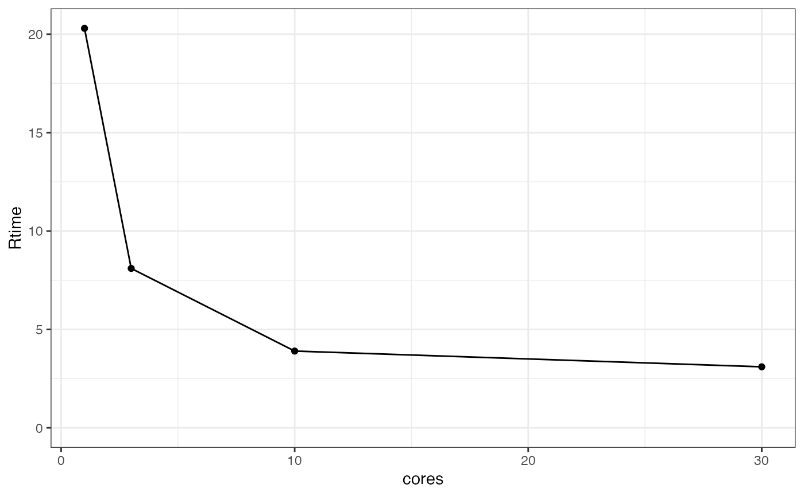

PLACEHOLDER: YouTube video showing “nm_tran” RStudio ‘Addin’ in action.
In a cluster environment it is especially important to be able to diagnose data and control file issues before sending jobs off to the grid. Otherwise, you often need to wait minutes for errors that can be spotted immediately. It’s therefore highly recommended to make use of the “nm_tran” RStudio ‘Addin’. This will only run NMTRAN checks to find control file syntax errors and dataset errors. It will not run NONMEM itself. To use this ‘Addin’, highlight the above code and select the “nm_tran” RStudio ‘Addin’ near the top of the RStudio GUI.
Executing NONMEM simply requires the run_nm() function which will often form the last step of the chain and then run the command.
m1 <- new_nm(run_id = "m1",
based_on = "staging/Models/ADVAN2.mod",
data_path = "DerivedData/data.csv") %>%
cmd("execute {ctl_name} -dir={run_dir}") %>%
fill_input() %>%
run_nm()By default the execution will take place asynchronously.
To view all runs in the workspace and track progress:
shiny_nm()PLACEHOLDER: video showing shiny run monitor
Directory sizes can become large with running NONMEM. One strategy is to use the clean option in PsN, however if you want to retain temporary files and delete them post-hoc you can use the ls_tempfiles() function to list them for deletion.
m1 %>% ls_tempfiles() ## will list all temporary files associate with run m1
## remove all temporary files associated with m1
m1 %>% ls_tempfiles() %>% unlink()
## Not specifying an argument will list temporary files of all runs
ls_tempfiles()Two fields parafile and cores when combined with a suitable cmd can enable runs to be executed in parallel using PsN.
Often you’ll want to know the right level of parallelisation to run your model to maximise speed without wasting too many resources. The following creates multiple runes with different levels of parallelisation. We’ll just test it across 1, 3, 10, and 30 cores, but this can be any vector.
test_cores <- c(1, 3, 10, 30) ## test these levels of parallelisation
m1c <- m1 %>% ## start with parent m1 again
child(run_id = test_cores) %>% ## use "cores" as run_id (object is now length 4)
run_in("Models/m1_coretest") %>% ## for tidiness run them all in m1_coretest
cmd("execute {ctl_name} -parafile={parafile} -dir={run_dir} -nodes={cores}") %>% ## parallelized execute
parafile("/opt/NONMEM/nm75/run/mpilinux8.pnm") %>%
cores(test_cores) ## and finally set the cores of each models according to test_cores
m1c %>% cmd()
#> [1] "execute run1.mod -parafile=/opt/NONMEM/nm75/run/mpilinux8.pnm -dir=1 -nodes=1"
#> [2] "execute run3.mod -parafile=/opt/NONMEM/nm75/run/mpilinux8.pnm -dir=3 -nodes=3"
#> [3] "execute run10.mod -parafile=/opt/NONMEM/nm75/run/mpilinux8.pnm -dir=10 -nodes=10"
#> [4] "execute run30.mod -parafile=/opt/NONMEM/nm75/run/mpilinux8.pnm -dir=30 -nodes=30"Each run is identical apart from the level of parallelisation
## run them all and wait for them to finish
m1c %>% run_nm() %>% wait_finish()
## extract job statistics and plot cores vs Rtime or Ttime to get plots of run
## time and total time vs number of CPUs
m1c %>%
job_stats() %>%
ggplot(aes(x = cores, y = Rtime)) + theme_bw() +
geom_point() +
geom_line() +
expand_limits(y = 0)
